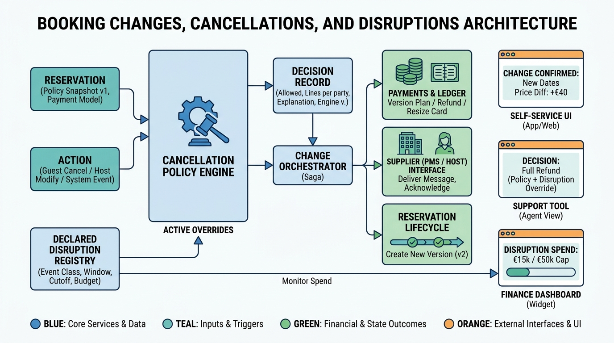

Part V — BOOKING: Making and Keeping the Reservation
When Plans Change: Modifications, Cancellations and Policies

Image generated by Google Gemini (gemini-3-pro-image-preview)
Part V — BOOKING: Making and Keeping the Reservation

Image generated by Google Gemini (gemini-3-pro-image-preview)